View at 100 percent browser zoom. Drafts only. Arena 384 px, camera 0 to 64 px. Plane offset = camera x k / 16: sky 0, far 4, mid A 8, mid B 12, near and hazard 16. Plane widths: sky 320, far 336, mid A 352, mid B 368, near 384. New art: mid A columns 336 to 351, mid B 336 to 367, near 320 to 383. Islands and fliers are placeholders (x spread by 1.2); the hazard strips are the accepted dither drafts, repeated to 384 px.
3x. The camera goes 0 to 64 and back once per loop; frame count and timing are those of the final pass. Clouds, airship, birds, beams and rain keep their own motion and do not follow the camera.
Clear night, moon

Storm, rain and search beams

Ember dusk, low sun

Clear night, moon, 2x
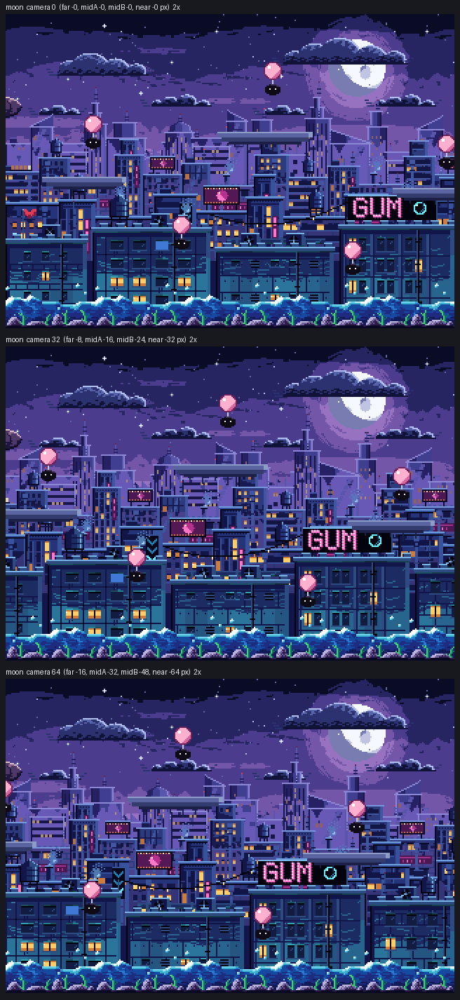
Storm, rain and search beams, 2x
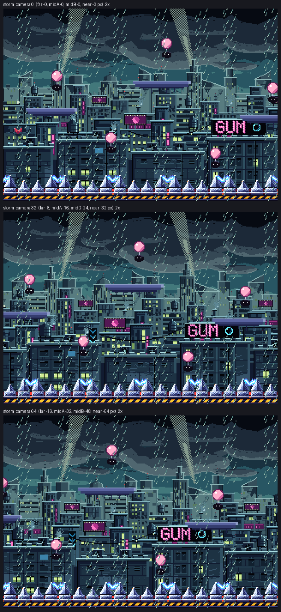
Ember dusk, low sun, 2x
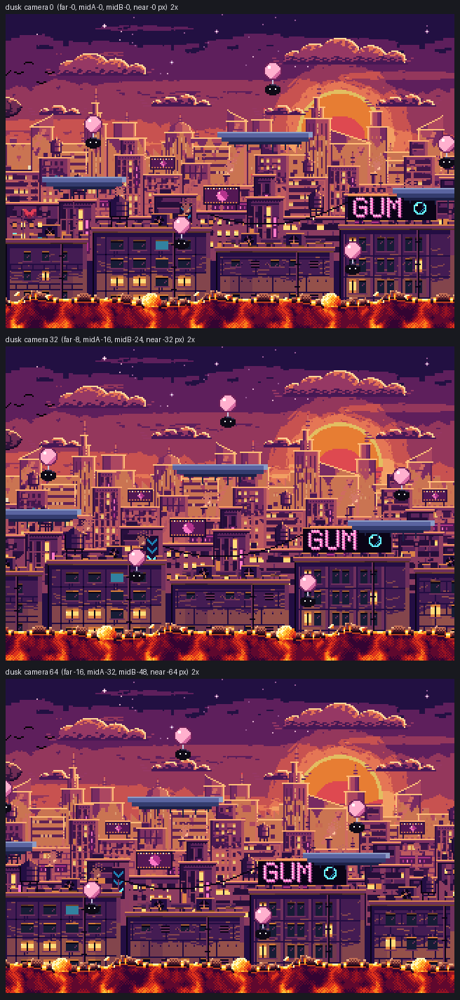
One sheet per plane and mood, full width, shown at 2x (files are 1x). Transparent colour: magenta 255, 0, 255. The near sheet uses the level 3 lit palette so that the cast-light role is a colour of its own. The new columns are at the right end.
Clear night, moon: sky, 320 x 128

Clear night, moon: far, 336 x 80
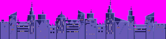
Clear night, moon: midA, 352 x 64
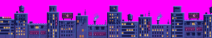
Clear night, moon: midB, 368 x 64
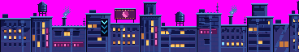
Clear night, moon: near, 384 x 96
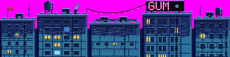
Clear night, moon: cloudsfront, 320 x 32

Clear night, moon: cloudsback, 160 x 32

Clear night, moon: airship, 256 x 32

Storm, rain and search beams: sky, 320 x 128
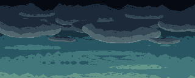
Storm, rain and search beams: far, 336 x 80
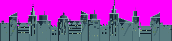
Storm, rain and search beams: midA, 352 x 64
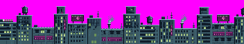
Storm, rain and search beams: midB, 368 x 64
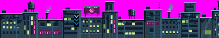
Storm, rain and search beams: near, 384 x 96
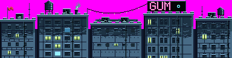
Storm, rain and search beams: beams, 320 x 88

Ember dusk, low sun: sky, 320 x 128
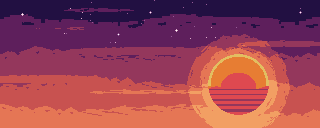
Ember dusk, low sun: far, 336 x 80

Ember dusk, low sun: midA, 352 x 64
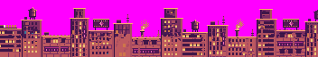
Ember dusk, low sun: midB, 368 x 64
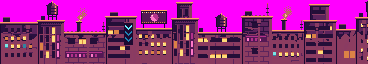
Ember dusk, low sun: near, 384 x 96
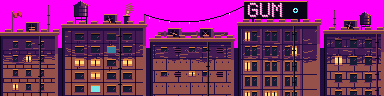
Ember dusk, low sun: cloudsfront, 320 x 32
Ember dusk, low sun: cloudsback, 160 x 32
Ember dusk, low sun: airship, 256 x 32
== mood moon: Clear night, moon (hazard water, 100 ms per hazard step in the GIF) sky palettes 1 (colours [11]; 11 distinct) unique tiles 165 animated tile positions 12 loop frames 4 | dither px 13125 median lum step 29.9 min 29.8 far palettes 1 (colours [10]; 10 distinct) unique tiles 94 animated tile positions 12 loop frames 8 | dither px 4453 median lum step 32.4 min 32.4 midA palettes 3 (colours [15, 15, 8]; 19 distinct) unique tiles 146 animated tile positions 26 loop frames 8 | dither px 1189 median lum step 44.7 min 44.7 midB palettes 3 (colours [15, 15, 7]; 21 distinct) unique tiles 179 animated tile positions 29 loop frames 8 | dither px 1352 median lum step 32.9 min 32.9 near palettes 3 (colours [15, 15, 11]; 26 distinct) unique tiles 266 animated tile positions 33 loop frames 8 | dither px 4847 median lum step 30.3 min 30.3 clouds front palettes 1 (colours [4]; 4 distinct) unique tiles 45 animated tile positions 11 loop frames 4 | dither px 1224 median lum step 33.5 min 33.5 clouds back palettes 1 (colours [4]; 4 distinct) unique tiles 32 animated tile positions 9 loop frames 4 | dither px 249 median lum step 33.5 min 33.5 airship palettes 1 (colours [9]; 9 distinct) unique tiles 11 animated tile positions 2 loop frames 5 | dither px 486 median lum step 39.3 min 39.3 near plane: packed with the level 3 lit palette (all roles distinct); 3 lit copies of each near palette, one level per 16 px column; near cast-light pair step at level 1 / 2 / 3: 30.3 / 42.1 / 54.0; at level 0 the light role equals the wall colour (no dither shown) totals: 14 palettes (+ lit copies), 938 unique tiles, 134 animated tile positions scenery sprites per scanline, EVERY plane column counted (off-screen columns count: far 21, midA 22, midB 23, near 24), trimmed to visible tiles: worst 65 at lines 128..143 (rain there: 0) + gameplay reserve 24 + hazard strip 24 columns on lines 192..223: worst 89 of 96 at lines 128..143 (rain there: 0) OK per 16 lines, total (all columns): 44 55 59 63 81 77 76 85 89 71 59 48 72 72 same total with off-screen columns culled (at most 21 per plane and hazard, max over camera 0..64): worst 84 at lines 112..143 per 16 lines, total (culled): 44 55 59 63 81 77 75 84 84 66 56 45 66 66 camera 0, play area lines 16..175: darker than 24: 6.2% brighter than 150: 5.0% (p5 22 median 74 p95 152) camera 32, play area lines 16..175: darker than 24: 6.3% brighter than 150: 4.9% (p5 22 median 74 p95 149) camera 64, play area lines 16..175: darker than 24: 6.5% brighter than 150: 4.9% (p5 22 median 74 p95 149) build sheets (1x, transparent colour 255,0,255): sky 320x128, far 336x80, midA 352x64, midB 368x64, near 384x96, cloudsfront 320x32, cloudsback 160x32, airship 256x32 against the final pass sheets: sky: identical in x 0..319; far: identical in x 0..335; midA: 10 px differ in x 0..335 (x 334..335, y 38..62); midB: identical in x 0..335, +32 new; near: identical in x 0..319, +64 new; cloudsfront: identical in x 0..319; cloudsback: identical in x 0..159; airship: identical in x 0..255 gif: 80 frames, 115 colours, 4.54 MB, camera 0..64..0, decode check on 4 frames: equal == mood storm: Storm, rain and search beams (hazard spikes, 70 ms per hazard step in the GIF) sky palettes 1 (colours [9]; 9 distinct) unique tiles 153 animated tile positions 0 loop frames 1 | dither px 14739 median lum step 29.8 min 28.8 far palettes 1 (colours [10]; 10 distinct) unique tiles 94 animated tile positions 12 loop frames 8 | dither px 4453 median lum step 41.4 min 41.4 midA palettes 3 (colours [15, 15, 8]; 19 distinct) unique tiles 146 animated tile positions 26 loop frames 8 | dither px 1189 median lum step 50.4 min 50.4 midB palettes 3 (colours [15, 15, 6]; 21 distinct) unique tiles 179 animated tile positions 29 loop frames 8 | dither px 1352 median lum step 35.7 min 35.7 near palettes 3 (colours [15, 15, 11]; 26 distinct) unique tiles 266 animated tile positions 33 loop frames 8 | dither px 4847 median lum step 30.2 min 30.2 beams palettes 1 (colours [1]; 1 distinct) unique tiles 86 animated tile positions 22 loop frames 5 | dither px 0 median lum step 0.0 min 0.0 rain palettes 1 (colours [2]) unique tiles 8 (1 tile x 8 frames) 14 sprites (2 full columns, 6 split around lines 80..143), at most 8 per line; mesh, not counted as dither near plane: packed with the level 3 lit palette (all roles distinct); 3 lit copies of each near palette, one level per 16 px column; near cast-light pair step at level 1 / 2 / 3: 30.2 / 41.9 / 54.0; at level 0 the light role equals the wall colour (no dither shown) totals: 13 palettes (+ lit copies), 932 unique tiles, 122 animated tile positions scenery sprites per scanline, EVERY plane column counted (off-screen columns count: far 21, midA 22, midB 23, near 24), trimmed to visible tiles: worst 67 at lines 128..143 (rain there: 2) + gameplay reserve 24 + hazard strip 24 columns on lines 192..223: worst 91 of 96 at lines 128..143 (rain there: 2) OK per 16 lines, total (all columns): 58 57 56 61 70 74 78 87 91 79 67 56 80 80 same total with off-screen columns culled (at most 21 per plane and hazard, max over camera 0..64): worst 86 at lines 112..143 per 16 lines, total (culled): 58 57 56 61 70 74 77 86 86 74 64 53 74 74 rain without the gap (all 8 rain columns full height): worst 97 of 96 (all columns), 92 (culled) -> the gap on lines 80..143 is STILL NEEDED camera 0, play area lines 16..175: darker than 24: 5.1% brighter than 150: 6.8% (p5 14 median 68 p95 168) camera 32, play area lines 16..175: darker than 24: 5.2% brighter than 150: 6.8% (p5 14 median 68 p95 168) camera 64, play area lines 16..175: darker than 24: 5.3% brighter than 150: 6.8% (p5 14 median 68 p95 168) build sheets (1x, transparent colour 255,0,255): sky 320x128, far 336x80, midA 352x64, midB 368x64, near 384x96, beams 320x88 against the final pass sheets: sky: identical in x 0..319; far: identical in x 0..335; midA: 10 px differ in x 0..335 (x 334..335, y 38..62); midB: identical in x 0..335, +32 new; near: identical in x 0..319, +64 new; beams: identical in x 0..319 gif: 64 frames, 205 colours, 4.57 MB, camera 0..64..0, decode check on 4 frames: equal == mood dusk: Ember dusk, low sun (hazard lava, 130 ms per hazard step in the GIF) sky palettes 1 (colours [12]; 12 distinct) unique tiles 156 animated tile positions 7 loop frames 4 | dither px 11948 median lum step 30.0 min 29.6 far palettes 1 (colours [10]; 10 distinct) unique tiles 94 animated tile positions 12 loop frames 8 | dither px 4453 median lum step 33.7 min 33.7 midA palettes 3 (colours [15, 15, 8]; 19 distinct) unique tiles 146 animated tile positions 26 loop frames 8 | dither px 1189 median lum step 74.6 min 74.6 midB palettes 3 (colours [15, 15, 6]; 21 distinct) unique tiles 179 animated tile positions 29 loop frames 8 | dither px 1352 median lum step 59.2 min 59.2 near palettes 3 (colours [15, 15, 11]; 26 distinct) unique tiles 266 animated tile positions 33 loop frames 8 | dither px 4847 median lum step 29.9 min 29.9 clouds front palettes 1 (colours [4]; 4 distinct) unique tiles 45 animated tile positions 11 loop frames 4 | dither px 1224 median lum step 44.5 min 44.5 clouds back palettes 1 (colours [4]; 4 distinct) unique tiles 32 animated tile positions 9 loop frames 4 | dither px 249 median lum step 44.5 min 44.5 airship palettes 1 (colours [9]; 9 distinct) unique tiles 11 animated tile positions 2 loop frames 5 | dither px 486 median lum step 35.4 min 35.4 near plane: packed with the level 3 lit palette (all roles distinct); 3 lit copies of each near palette, one level per 16 px column; near cast-light pair step at level 1 / 2 / 3: 29.9 / 42.1 / 54.3; at level 0 the light role equals the wall colour (no dither shown) totals: 14 palettes (+ lit copies), 929 unique tiles, 129 animated tile positions scenery sprites per scanline, EVERY plane column counted (off-screen columns count: far 21, midA 22, midB 23, near 24), trimmed to visible tiles: worst 65 at lines 128..143 (rain there: 0) + gameplay reserve 24 + hazard strip 24 columns on lines 192..223: worst 89 of 96 at lines 128..143 (rain there: 0) OK per 16 lines, total (all columns): 44 55 63 67 81 77 76 85 89 71 59 48 72 72 same total with off-screen columns culled (at most 21 per plane and hazard, max over camera 0..64): worst 84 at lines 112..143 per 16 lines, total (culled): 44 55 63 67 81 77 75 84 84 66 56 45 66 66 camera 0, play area lines 16..175: darker than 24: 3.6% brighter than 150: 6.3% (p5 26 median 87 p95 177) camera 32, play area lines 16..175: darker than 24: 3.7% brighter than 150: 6.3% (p5 25 median 87 p95 177) camera 64, play area lines 16..175: darker than 24: 3.8% brighter than 150: 6.1% (p5 25 median 87 p95 177) build sheets (1x, transparent colour 255,0,255): sky 320x128, far 336x80, midA 352x64, midB 368x64, near 384x96, cloudsfront 320x32, cloudsback 160x32, airship 256x32 against the final pass sheets: sky: identical in x 0..319; far: identical in x 0..335; midA: 10 px differ in x 0..335 (x 334..335, y 38..62); midB: identical in x 0..335, +32 new; near: identical in x 0..319, +64 new; cloudsfront: identical in x 0..319; cloudsback: identical in x 0..159; airship: identical in x 0..255 gif: 80 frames, 119 colours, 4.66 MB, camera 0..64..0, decode check on 4 frames: equal